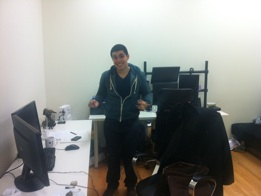
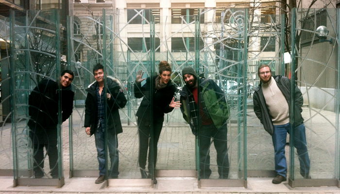

Let’s put a pin in it...
Sunday, January 8, 2012
A week in a start-up company can be either an absolutely addictive experience, or cause you to run to the hills in search of the largest corporation that will hire you.
For me... I think its in my blood... and I’m a bit of an addict.
The company I worked for this week was Pinpoint Social. A two man team who developed a Facebook app that allows brand pages to create and manage online promotions and sweepstakes. So for example... when you go to facebook page.. you see that nice little banner that says something like... “Like us? there is a button for that.. enter to win!” they created all the back end programming so that you, as a page manager, can track data, increase online presence and give away cool prizes!
The guys work in downtown Toronto and rent an office space from Hitgrab- one of Facebook’s biggest independent game developers.

Pinpoint Social is about a year old and just starting to get some good traction with the product, it was a really cool time for me to come in and help out. Daniel -------------------> my boss for the week, gave me the opportunity to pick what I wanted to help out with. So for Monday, I did some work on user experience and provided some thought and strategy to make their product better.
After that was done.... I really got to take the initiative to find work and do it. It is hard to have someone in the office just for a week (especially after the holidays when all the stuff that needs to get done is divided between two people and limited resources) so I listened to what Daniel and Alex had going on, and worked on some business development and marketing stuff to help them in the new year. Daniel was great - he really kept me in the loop with what he was working on and shared some cool insight to what its like running a business as a young entrepreneur.
The tough things with a start ups is the work is very unpredictable, not necessarily the most secure job (your business might flop in a day), and there is always tons to do. But what I love about start-ups is the people behind them. They typically and sincerely love creating things and their business becomes a part of who they are. I can’t help but smile when I meet people who are proud of what they do :) it is like seeing a kid in kindergarden who has show and tell...
For the past companies, the work given to me was much more structured and there was a right and wrong way of doing things. But with these guys.. it was more listen to whats going on, tell them what I can help with, and just teach myself how to get it done - ask questions if I need to. It was really empowering and fun to have voice within the office and the decisions to make their product better.
It reminded me a lot of my time with SIFE MRU, creating projects and seriously giving your all to make something and share with others. The only difference was in SIFE... your paycheque wasn’t attached to this crazy thing you were working on.... so to see the more demanding and business side of entrepreneurship was great.
To be a proactive worker over the week was the only way I could create some value for the team which was a different way to work, I really enjoyed my time there and am so thankful that Dan & Alex made the time to have me and were so generous in teaching me what its like to start my own company. I learned a lot from the different atmosphere of work and I’m stoked on the range of wisdom I have received in the last 4 months.
This week of work was a learning experience in the office as well as outside - I had to overcome some new challenges that have been keeping me on my toes for the last few days.
The last company I had lined up for the project cancelled on me this past Wednesday (go figure... on overwhelming wednesday... haha) but to coordinate another company in a 10 day period is really tight so I have been stressing a bit on that. On top of that, I had a sponsorship pull out as well and I was put in a position where I had to choose between eating a meal, or having a place to stay. I have never.... in my life, been in a position like that and hope to never be there again. One of the hardest things for me right now was to ask for is help.. because I honestly feel so spoiled in the help, support and care I have received already... to ask for yet another thing just felt so wrong. I have been debating on sharing this challenge on my blog..... because I have been so lucky and don’t want to sound like complaining... but it was a pretty impactful week... and I had to mentally overcome a lot of stress and pressure to find a solution fast.
I am seriously beyond lucky to have some amazing friends and supporters of what I am trying to achieve. I love them so much, and can’t thank them enough for believing in me and what I am striving to achieve.
Things are starting to sort out and even though the week has been crazy... I have been able to keep my spirits up. I have 14 days left... can you believe it? I sure can’t.. hahah.
Words of wisdom is that attitude is the one thing you can control.... no matter what. Everything else is life is unpredictable (and often worse than Calgary’s weather.....), but if your mind is in  the right space.. problem solving is that much easier, and people are so much more willing and able to help you out.. all you have to do is ask.
the right space.. problem solving is that much easier, and people are so much more willing and able to help you out.. all you have to do is ask.
And seriously... don’t be afraid to ask for help. The worst they can say is no... then you try the next solution... and you would be surprised how easy struggles are to over come if you approach them with a team of people who can help you. That is a lesson I will never forget.
I promise mom & dad.... things are great. :) To fly we have to have resistance. - Maya Lin.
My 2nd last company starts tomorrow and I am really excited to share with you the time there and how my last week of the project pans out. Learning, growing, and being challenged everyday.
It has been an adventure.... and I wouldn’t change that for the world. :)
Thank you for reading! Your kind emails and comments. I feel so blessed and grateful to have them.
Much <3
Just Maeghan
you can check out facebook for all my pictures and stories.
